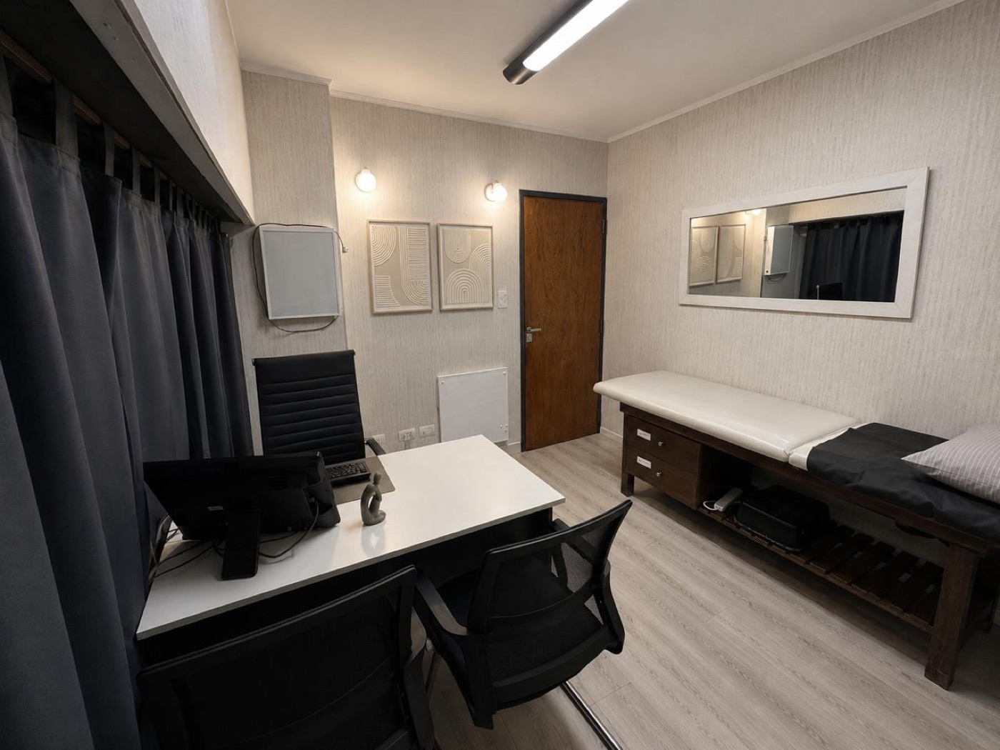

Cada grado de movimiento es un paso hacia tu recuperación.
Kinesiología, reeducación postural dinámica, ondas de choque radiales, acupuntura kinésica y especialidades médicas, en un mismo centro de Lomas de Zamora, sobre Juan Larrea 496.
¿Preferís consultar antes? Llamá al 11 5950-5888Se atienden diversas obras sociales y prepagas
Tocá donde te duele y te mostramos qué te conviene.

Una sesión real en nuestro centro, sin poses de stock.
Dos caminos más, directos
Si no es algo puntual del cuerpo, o ya tenés todo decidido, arrancá por acá.
Lo que encontrás en cada visita
Un plan para tu caso
Evaluamos cada caso y armamos un plan de tratamiento que se adapta a tu situación, no una rutina genérica.
Un equipo, muchas especialidades
Kinesiólogos y médicos de distintas especialidades — traumatología, reumatología, nutrición y más — dentro del mismo centro.
Acompañamiento real
Acompañamos tu progreso en cada control, desde la evaluación inicial hasta el alta.
Sin derivar a otro lado
Kinesiología, tratamientos especializados y especialidades médicas, en un mismo centro sobre Juan Larrea 496.
Kinesiología y tratamientos especializados
Evaluamos, tratamos y hacemos seguimiento de tu recuperación con las técnicas que mejor se adaptan a tu diagnóstico.

Kinesiología
Recuperá movilidad, fuerza y funcionalidad después de una lesión, cirugía o dolor crónico.

RPD Postural
Reeducación postural dinámica para corregir la postura y aliviar contracturas.

Ondas de choque
Tecnología no invasiva para dolor crónico y tendinopatías persistentes.

Acupuntura kinésica
Estimulación de puntos específicos integrada al plan de tratamiento.
Todas las especialidades, en un mismo lugar
Además de kinesiología, contamos con un staff de especialidades médicas para acompañar tu salud de forma integral.
Obras sociales y prepagas
+39 obras sociales y prepagas · ver el listado completo →


No todos los cuerpos necesitan lo mismo.
Por eso evaluamos cada caso antes de armar un plan de tratamiento, y lo ajustamos a medida que avanza tu recuperación.

Empezar es simple
Elegí
Encontrá el servicio o la especialidad que necesitás.
Reservá
Pedí tu turno online o escribinos por WhatsApp.
Vení
Te esperamos en Juan Larrea 496, Lomas de Zamora.
Antes de pedir tu turno
¿Qué obras sociales atienden?
Trabajamos con numerosas obras sociales y prepagas. Si la tuya no aparece en el listado completo, escribinos por WhatsApp y te confirmamos la cobertura.
¿Necesito orden médica para sacar un turno?
Depende de tu obra social: algunas la piden y otras no. Te recomendamos consultarlo con nosotros por WhatsApp antes de tu turno para evitar demoras.
¿Cuál es el horario de atención?
Atendemos de lunes a viernes de 8 a 20 hs. No hay turnos disponibles los fines de semana.
¿Empezamos con tu tratamiento?
Coordiná tu turno hoy mismo por WhatsApp o llamando al centro.
Juan Larrea 496
¿Tenés un consultorio para alquilar o querés sumarte al equipo?
Además de atender pacientes, ofrecemos consultorios para otros profesionales de la salud y siempre estamos abiertos a sumar talento al equipo.